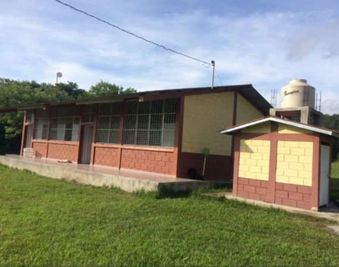
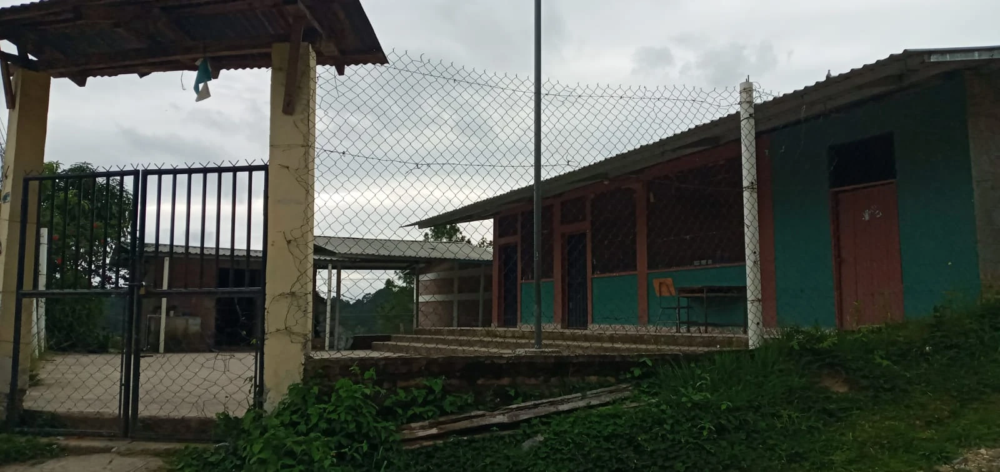

Intituciones

Instituto "SIR. Salvador Moncada"
Inició sus labores en el año 2016, con el nombre de Instituto Gubernamental “P.M. Roque Humberto Polanco”, como una institución facilitadora de la educación media, en el municipio de Santa Fe.
Ver mas
Instituto "Lic. Enrique Villela"
El C.E.B. Lic. Enrique Villela está ubicado en el municipio de Santa Fe, Departamento de Ocotepeque, urbano y fronterizo con la república de Guatemala.
Ver mas

Ver mas
C.E.B 'José Trinidad Reyes'
El centro educativo José Trinidad Reyes, de la aldea la Quesera, Santa Fe, Ocotepeque, fue fundada en el año de 1978, debido a la necesidad de tener un centro educativo en esta zona.
Ver mas